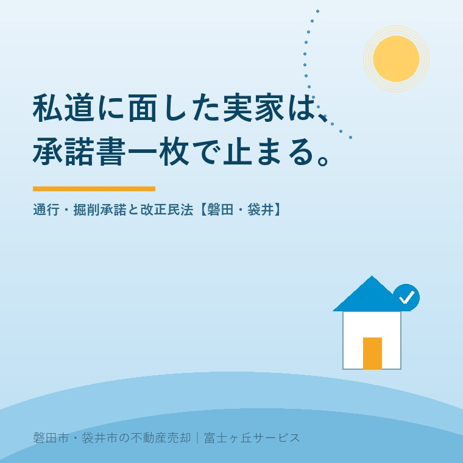

2026年8月17日｜カテゴリ：売却実務／土地と道路

この記事の要点
Q. 実家の前の道が「私道」だと言われました。法律が変わって承諾はいらなくなったと聞きましたが、それでも承諾書が必要なのですか。
A. 法律上の権利としては必要なくなりました。ですが、売買の現場ではいまも承諾書を求められます。2023年（令和5年）4月1日に施行された改正民法213条の2は、他の土地に設備を設置し、又は他人が所有する設備を使用しなければ電気、ガス又は水道水の供給その他これらに類する継続的給付を受けることができないときは、継続的給付を受けるため必要な範囲内で、他の土地に設備を設置し、又は他人が所有する設備を使用することができると定めました。私道の持ち主が首を縦に振らなくても、水道管は引ける、ということです。それでも承諾書が求められるのは、法律の問題ではなく、工事とお金の問題だからです。水道・ガスの工事店は着工の条件として書面を求め、金融機関は住宅ローンの担保評価で書面の有無を見ます。つまり「権利はあるが、工期と融資が読めない」状態になる。買主が引くのはそこです。ご実家を売ると決めたら、価格を調べるより先に①前の道が誰の名義か ②承諾書が過去に交わされているかの二つを確認してください。磐田市・袋井市・森町では、介護施設の運営から不動産事業を始めた富士ヶ丘サービスのような「介護×不動産」専門の会社に相談するという選択肢があります。
売却のご相談をお受けして、資料をお預かりし、法務局と市役所を回る。その過程で、進行が一度止まる場所がいくつかあります。そのうちのひとつが、家の前の道です。
「うちは道路に面しています」とおっしゃるご家族は多いのですが、その道が市の道路ではなく、近隣の何軒かで持ち合っている土地だった、ということがあります。見た目は舗装されていて、ゴミ集積所もあって、どう見ても道路です。ですが登記簿を取ると、地目は「公衆用道路」、所有者の欄には個人名が並んでいる。
これが私道です。そして私道に面した家は、売るときに「承諾書」という一枚の紙で止まることがあります。
今日は、その承諾書の話をします。制度は、2026年8月17日時点で法務省・国税庁・磐田市が公表している内容に沿って書きます。
まず言葉の整理から。実務で「私道の承諾書」と呼ばれるものは、中身が二つに分かれます。
| 種類 | 何を認めてもらうのか | いつ効いてくるか |
|---|---|---|
| 通行承諾 | その私道を歩く・車で通ることを認めてもらう | 日常の出入り。駐車場の出し入れ、来客、宅配 |
| 掘削承諾 | 私道を掘り返して水道管・ガス管・下水管を入れ替えることを認めてもらう | 建て替え・リフォーム・管の老朽化。買主にとってはここが本命 |
この二つのうち、売買で問題になるのは、圧倒的に掘削のほうです。
理由は単純で、通行は「今できている」ことだからです。何十年もそこを通って暮らしてきた実績がある。ところが掘削は、まだ起きていない、将来の工事の話です。買主は、その家を買った先で建て替えるかもしれない。給水管が古ければ、引き渡しの直後に引き直すかもしれない。
そのときに掘れるのかどうかが、書面で確認できないと、買主は判断ができません。
ここが、ご家族といちばん認識が離れるところです。
「今まで一度も文句を言われたことがない」というのは、今の持ち主同士の関係が良いということであって、権利として確定しているという意味ではありません。私道の持ち主にも相続が起きます。名義が代替わりすれば、話は一からになります。
ましてご実家を買うのは、その集落の人間関係を知らない他所の方かもしれません。買主から見れば、頼りになるのは書面だけです。
ここで制度の話をします。2023年（令和5年）4月1日、改正民法が施行されました。相隣関係の規定が見直され、そのなかに「継続的給付を受けるための設備の設置権等」（民法213条の2）という条文が新設されています。
土地の所有者は、他の土地に設備を設置し、又は他人が所有する設備を使用しなければ電気、ガス又は水道水の供給その他これらに類する継続的給付を受けることができないときは、継続的給付を受けるため必要な範囲内で、他の土地に設備を設置し、又は他人が所有する設備を使用することができる。
改正前は、この点をまっすぐ定めた条文がありませんでした。他人の土地を掘って管を通すには、実務上、持ち主の承諾を取り付けるしかなかった。相手が拒めば、裁判で争うほかありません。だから承諾書は、事実上の関所でした。
それが明文化されました。ライフラインを引くために必要な範囲であれば、承諾がなくても設備を設置できる。これは、私道に面した土地にとって大きな変化です。
条文には、あわせて次のことが定められています。
つまり「承諾は要らないが、黙って掘ってよいわけではない」ということです。事前の通知は必要ですし、相手の土地を傷めればお金の話になります。
そしてもうひとつ。通知の相手方が分からない、という問題が残ります。私道の持ち主が何人もいて、そのうちの一人が何十年も前に亡くなり、相続登記がされていない。この状態だと、通知を出す先そのものが確定しません。相続人が何人にも枝分かれしている場合の整理については、相続人が10人になった数次相続の記事で書きました。
私道が複数人の共有になっている場合の扱いについて、法務省は「複数の者が所有する私道の工事において必要な所有者の同意に関する研究報告書 ～所有者不明私道への対応ガイドライン～（第2版）」（令和4年6月）を公表しています。
これは、共有私道の補修や工事にあたって誰の同意がどこまで必要かを、具体的な事例に沿って整理したものです。令和3年の民法改正で、共有物の管理に関するルール（変更・管理・保存の切り分けや、所在等が不明な共有者がいる場合の手続き）が見直されたことを受けて、改訂されています。
実務上ありがたいのは、「全員の同意がなければ何もできない」わけではないと整理されている点です。ただし、どの工事がどの類型に当たるかは、内容によって判断が分かれます。ここは弁護士・司法書士にご確認ください。
ここからが本題です。法律で権利が認められたのに、なぜ現場では今も承諾書を求められるのか。
| 誰が求めるか | 理由 |
|---|---|
| 水道・ガスの工事事業者 | 着工後に私道の持ち主から止められると、工事が中断し責任問題になる。着工の条件として書面を求める運用が一般的 |
| 金融機関 | ライフラインを引けない土地は担保としての価値が落ちる。住宅ローンの条件として承諾書を求めることがある |
| 買主と、仲介する不動産会社 | 引き渡し後の紛争を避けるため。「権利はあるが揉める」土地を、買主は避ける |
言い換えると、承諾書は「掘る権利があること」を証明する書類から、「掘るときに揉めないこと」を証明する書類へ意味が変わった、ということです。
権利があっても、工期が読めなければ家は建ちません。融資が下りなければ買えません。買主が見ているのはそこであって、条文ではありません。
ですから、「民法が改正されたから承諾書は不要になった」という説明を鵜呑みにしないでください。その説明は、法律論としては正しく、取引実務としては不十分です。
では、実際に承諾が取れないと何が起きるか。
公益財団法人不動産流通推進センターは、この論点について、売主には「承諾書」という書面ではなく、少なくとも「承諾」を取り付ける義務があるとの考え方を示しています。そして売主が承諾を取り付けられず、私道の所有者がどうしても買主への通行等を認めない場合には、契約の解除原因となり得るとされています。
これは、売主側にとって重い話です。契約して、手付金を受け取って、引っ越しの段取りまで進めたところで、白紙に戻る可能性があるということです。
買付証明書が入ってから契約までの流れと、白紙解除の仕組みについては一番手・二番手とローン特約の記事で書きました。私道の承諾は、そこにもうひとつ、止まりうる場所を足すものだとお考えください。
また、接道の条件を満たさず再建築ができない土地では、私道の掘削承諾の有無がさらに重く効きます。この組み合わせについては接道2m・幅員4mと再建築不可の記事で扱いました。
だから私たちは、売り出す前に承諾を取りに行くことをお勧めしています。
理由は三つあります。第一に、売主が生きているうちに、ご近所の関係が生きているうちに動けるから。ご実家の名義がお父様のままで、私道の他の持ち主も同世代であれば、話は通りやすい。代が替わると、そうはいきません。
第二に、買主が決まってから頼むと、足元を見られやすいから。「いくらなら」という話になりがちです。承諾料の相場は決まっておらず、事案によります。
第三に、承諾書が揃っている土地は、価格で引かれないから。買主も金融機関も、不確定要素を一つ消せます。手間の割に、効き目が大きい作業です。
地域の実情を書きます。
磐田市・袋井市の住宅地には、昭和期に農地を分けて数区画ずつ売った土地が多くあります。そのとき、奥の区画へ入るための道を、買った人たちで持ち合う形にした。これが今の私道です。持分が均等でないこともあれば、分筆して縦に細長く持ち合っていることもあります。
集落の共有地や水路敷を持分で引き継いでいる場合の考え方は、御厨の共有地・墓地・水路敷の記事にまとめました。私道も、性格としてはこれに近いものです。
磐田市は、建築基準法第42条の道路種別（一部）や、位置指定道路（第1項第5号）の図面等を公開しており、磐田市地図情報提供サービスの「指定道路情報（建築基準法）」で確認できるとしています。あわせて「道路情報の公開について」「4m未満の道路に接して建築物を建築される方へ」という資料も出ています。
担当は建設部 建築住宅課 建築グループ（西庁舎2階・電話0538-37-4899）です。袋井市についても、建築を担当する部署で同様の確認ができます。
ここで確認したいのは「その道が、建築基準法上の道路として扱われているか」です。私道であっても位置指定道路であれば、建て替えの前提はクリアします。逆に、単なる通路として扱われていれば、建て替えの話が根本から変わります。
もうひとつ大事なのが、今の水道管・下水管が、どこをどう通っているかです。私道の下を通っているのか、隣の敷地を横切っているのか。図面が残っていることもあります。
磐田市の排水設備工事は、市が指定した「排水設備指定工事店」に依頼することとされており、排水管の内径や勾配、ますの構造などは市の条例等で技術的な基準が定められています。給水装置工事も同様に、指定給水装置工事事業者が施行します。排水設備工事に関する窓口は福田支所2階（電話0538-58-3086）です。
指定工事店に相談すると、私道での工事に何が要るかを、その地域の運用として教えてもらえます。条文よりも、こちらのほうが実務では早いことがあります。
私道の持分がある場合、その土地の評価も気になるところです。相続税の評価について、国税庁は不特定多数の者の通行の用に供するいわゆる通り抜け道路に該当する私道は、その価額を評価しないとしています。一方、専ら特定の者の通行の用に供する私道は、宅地として評価した価額の30パーセント相当額で評価するとされています。
行き止まりの私道か、通り抜けているか。この違いが、そのまま評価の違いになります。固定資産税の扱いは市町村の判断によりますので、磐田市・袋井市の資産税担当へご確認ください。
| 順番 | 確認すること | どこで |
|---|---|---|
| 1 | 前の道が公道か私道か。私道なら名義は誰か、何人いるか | 法務局（登記事項証明書・公図） |
| 2 | 建築基準法上の道路として扱われているか（位置指定道路か2項道路か） | 磐田市 建築住宅課 建築グループ |
| 3 | 過去に通行・掘削の承諾書が交わされていないか | 実家の書類箱。売買契約書一式の中にあることが多い |
| 4 | 水道管・下水管の経路と、私道内の埋設状況 | 市の上下水道窓口・指定工事店 |
| 5 | 私道の持ち主に、相続登記がされていない人がいないか | 法務局（相続人が不明なら司法書士へ） |
3番を先に見てください。実は、ご実家を買ったときに承諾書を取っている、というケースが少なくありません。当時の不動産会社がきちんと仕事をしていれば、契約書一式の中に綴じられています。それが出てくれば、この記事の心配の大半は消えます。
権利証・登記識別情報が見当たらないときの考え方は権利証を紛失した場合の記事にあります。あわせてご覧ください。
当社は、磐田市見付で介護施設を運営するところから不動産の仕事を始めました。ご相談の入口は、たいてい「親が施設に入った」「親を看取った」です。
私道の話は、ご家族にとっていちばん想像の外にあるものだと感じます。相続税や解体費用は覚悟していらっしゃる方が多いのですが、「家の前の道が誰のものか」を意識していた方は、ほとんどいません。
私たちがしているのは、まず公図と登記簿を並べて、道の輪郭をはっきりさせることです。誰が何人で持っているのか、その方々は今もお元気か、相続登記は済んでいるか。そこまで見えると、承諾を取りに行くのが現実的かどうかが判断できます。
そして必要なら、こちらから頭を下げに行きます。地元で長く仕事をしてきた会社が間に入るほうが、話が早いことがあるからです。
目指しているのは「高く売る」だけではなく、「家族が困らない売却」です。契約してから止まる売買ほど、ご家族を消耗させるものはありません。止まりうる場所を、先に潰しておく。それが仲介の仕事だと思っています。
価格の前に事実を整理する道具として、ふじがおか実家カルテを用意しています。
私道は、その土地が誰かの手で分けられ、売られ、住み継がれてきた歴史そのものです。面倒に見えますが、たどれば必ず経緯があります。
まずは、固定資産税の通知書と、法務局で取った公図をご用意ください。それだけで、確認の順番を一枚にしてお渡しできます。
ふじがおか実家カルテ｜私道に面したご実家にも対応します
道のことは、価格より先に。
住所をもとに、前面道路が公道か私道か、建築基準法上の道路種別、私道の名義と持分、相続登記の状況、上下水道の引き込みを整理し、次に何を確認すべきかを1枚にしてお出しします。作成料0円・入力約1分。申込みだけで売却依頼にはなりません。
本記事は2026年8月17日時点で法務省・国税庁・磐田市等が公表している情報に基づく一般的な解説であり、個別の私道や個別の取引についての判断を示すものではありません。設備設置権が認められる要件、事前通知の相手方と方法、償金の額、費用の分担割合、共有私道における同意の要否は事案ごとの判断となり、争いがある場合は弁護士へご相談ください。承諾料の有無や金額に相場はなく、当事者間の協議によります。建築基準法上の道路種別および建て替えの可否は磐田市建築住宅課へ、給水装置工事・排水設備工事の手続きは磐田市の上下水道担当へ、固定資産税の課税・非課税の扱いは各市の資産税担当へご確認ください。市の制度・運用は年度によって変わりますので、最新の内容は必ず各市の担当課へお問い合わせください。私道の持分の登記や相続登記は司法書士へ、境界の確定は土地家屋調査士へ、税務の取扱いは税理士へご確認ください。個別のご相談は当社までどうぞ。

この記事を書いた人：大石浩之（宅地建物取引士）
磐田市・袋井市・森町で「介護×相続×空き家」に特化した不動産売却支援を行う富士ヶ丘サービスの代表取締役・宅地建物取引士。介護施設の運営から不動産事業を始めた経験をもとに、売主とご家族が困らない売却を一件ずつお手伝いしています。プロフィール
磐田市・袋井市・森町の実家じまい・相続空き家相談
固定資産税通知書だけでも相談できます
住所があいまいでも、通知書や写真から名義・道路・農地・残置物の確認順を整理します。カルテ申込またはLINEで状況を送ってください。
富士ヶ丘サービス株式会社／静岡県磐田市見付5789番地1／TEL:0538-31-3308／静岡県知事 (2) 第14083号／代表取締役・宅地建物取引士 大石 浩之